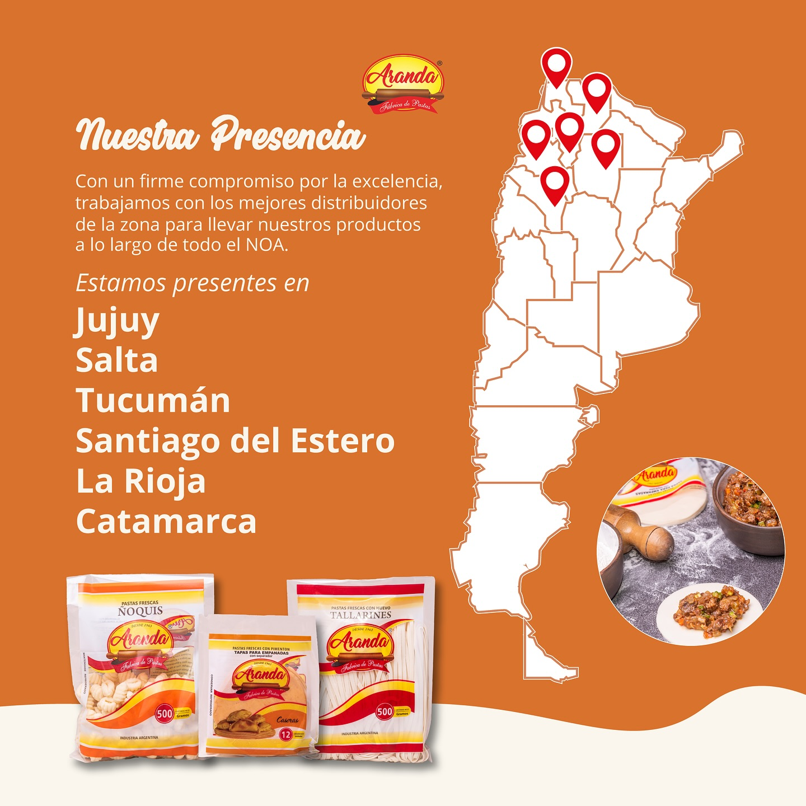

Presencia en el NOA
Casa central en San Salvador de Jujuy y red de distribución en Jujuy, Salta, Tucumán, Santiago del Estero, Catamarca y La Rioja.
Jujuy
San Salvador · Palpalá · Perico
Locales y autoservicios.Salta · Tucumán
Mayoristas y comercios de cercanía.
Consultar stock por zona.Sgo. del Estero · Catamarca · La Rioja
Distribución programada.
Pedidos por volumen.